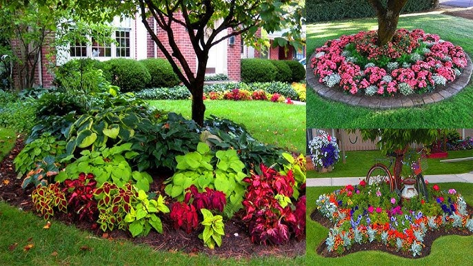
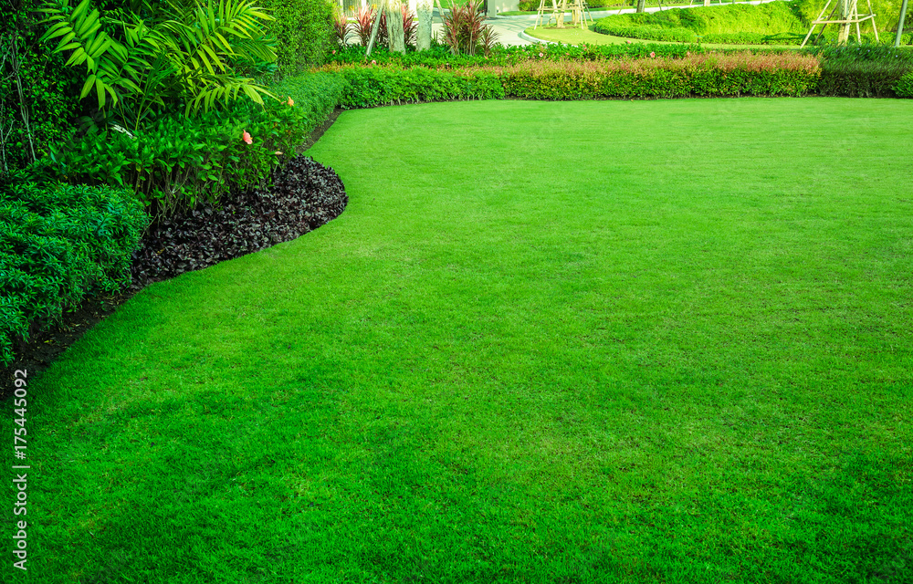
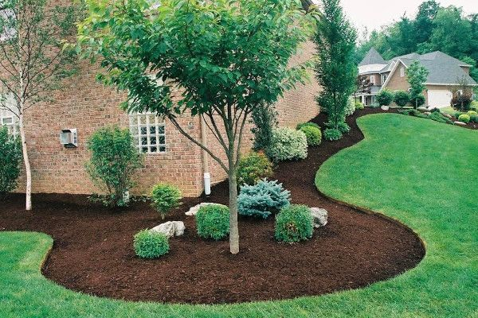

Absolutely Thrilled with GreenScape Creations!
Reviewer: Jill Landowner
Service: Fertilizer Application, Weed Control, Carbon Treatment
From the initial consultation, their team—led by Sarah, who was wonderful—was professional, knowledgeable, and genuinely enthusiastic about the project. They provided a clear plan and quote for a complete cleanup, soil rejuvenation, and replanting with beautiful, low-maintenance, native species.
The execution was flawless. The crew arrived on time, worked diligently, and left the area spotless. The cleanup of the old beds was thorough, and the new plantings are stunning. The beds now look vibrant, well-organized, and perfectly manicured. It's completely transformed the curb appeal of our home.
If you are looking for a company that combines professionalism with a passion for beautiful landscaping, look no further than GreenScape Creations. Highly recommend their services—five stars across the board!

Phenomenal Results with GreenScape Creations!
Reviewer: Bob Propertyowner
Service: Weed Control
From the first consultation to the final treatment, their team was professional, knowledgeable, and clearly passionate about what they do. They quickly diagnosed the issues and implemented a treatment plan that worked wonders.
My lawn is now the deepest, most vibrant shade of green I've ever seen. More importantly, it is completely weed-free! We used to battle dandelions and crabgrass constantly, but now the lawn is nothing but healthy, lush turf. My neighbors have even stopped to ask what my secret is, and I proudly tell them it's GreenScape Creations. If you're looking for a company to transform your yard, look no further—they deliver on their promise of a perfect, green landscape.

Exceeded Expectations! GreenScape Creations is Fantastic!
Reviewer: Satisfied Homeowner
Service: Flowerbed Edging and Mulching
The edging is incredibly crisp, sharp, and clean—it perfectly defines the beds and makes the lawn look professionally maintained. The team was meticulous, ensuring every curve and straight line was immaculate.
The mulching itself was done quickly and efficiently. The mulch was spread evenly, achieving the perfect depth, and instantly giving our landscaping a rich, finished look. The entire crew was polite, respectful of our property, and clearly took pride in their work.
If you need professional, high-quality landscaping services, especially for detailed work like edging and mulching, do not hesitate to call GreenScape Creations. They transformed our yard from "nice" to "wow!" Highly recommend!